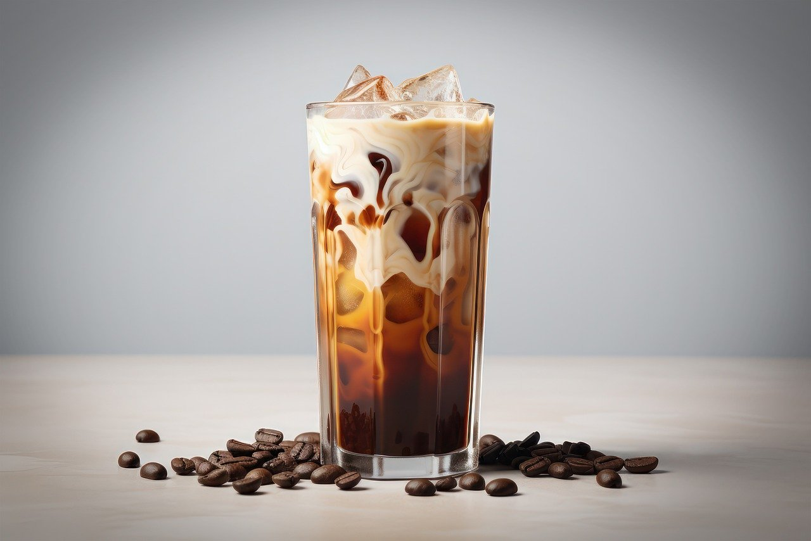

-
Capuccino
Ingredientes:Uma mistura clássica de café espresso, leite vaporizado e espuma de leite cremosa, resultando em uma bebida suave e indulgente. O cappuccino é uma escolha reconfortante para quem aprecia a cremosidade e o sabor do café.
-

Café tradicional - Filtrado
Ingredientes:Um clássico café preparado por infusão, onde a água quente é filtrada através de grãos de café moídos, resultando em uma bebida aromática e suave, perfeita para apreciar a pureza do sabor do café.
-
Café Expresso
Ingredientes:Uma dose concentrada de café feita com água quente pressionada sob alta pressão através de grãos de café finamente moídos. O espresso é conhecido por seu sabor intenso e encorpado, ideal para quem busca uma dose rápida de energia e sabor.
-

Frapuccino
Ingredientes:Uma deliciosa combinação de café espresso, leite gelado e xarope de sua escolha, tudo misturado com gelo e coberto com chantilly. Uma opção refrescante e energizante para os amantes de café.
-
Leite com café - O famoso pingado
Ingredientes:Uma bebida simples e reconfortante, feita com café expresso e uma generosa quantidade de leite vaporizado, proporcionando uma combinação equilibrada entre o sabor rico do café e a cremosidade do leite.
-

Café gelado
Ingredientes:Uma opção refrescante e revigorante para os dias quentes, o café gelado é preparado com café espresso ou café filtrado, servido sobre gelo e muitas vezes adoçado e adicionado com leite ou creme, proporcionando uma experiência refrescante e deliciosa.